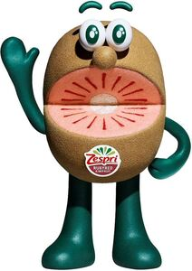

Trade Mark Journal No.2025/041 10 October 2025
WO0000001867281 (16,28,31)
Office of origin: New Zealand
Date of International Registration:4 February 2025
Date of designation in the UK:
4 February 2025

International priority date claimed: 14 January 2025
(New Zealand)
(1283084)
- Class 16
- Printed matter, namely books and magazines, in the field of agriculture and horticulture; printed promotional materials, namely flyers, notebooks and brochures featuring and providing information in the field of agricultural and horticultural products; packaging materials made from paper or cardboard, namely labels, bags, sheets, trays and boxes; storage bags and articles made of cardboard; display boxes of cardboard; display banners of cardboard; books and booklets; stationery, namely paper, envelopes, pads, cards; pens and pencils; printed instructional and teaching materials, namely guides, charts, manuals; printed publications, namely books, magazines, newsletters, newspapers; stickers; tissues; erasers.
- Class 28
- Toys and playthings, namely stuffed and plush toys, stuffed and plush dolls; sports balls; party balloons; golf balls; toy figures; toy flying saucers for toss games; jigsaw puzzles.
- Class 31
- Agricultural and horticultural products, namely live plants, seedlings and plant material, namely agricultural seeds for kiwifruits; plant propagation material, namely cuttings, budwood and seeds; fresh fruits; fresh kiwifruit; fresh kiwiberries; kiwifruit pollen and kiwiberries pollen being raw material for industrial use.
ZESPRI GROUP LIMITED
Representative: Baker McKenzie, Tower One - International Towers Sydney,, Level 46, 100 Barangaroo Avenue, Sydney NSW 2000, AUSTRALIA